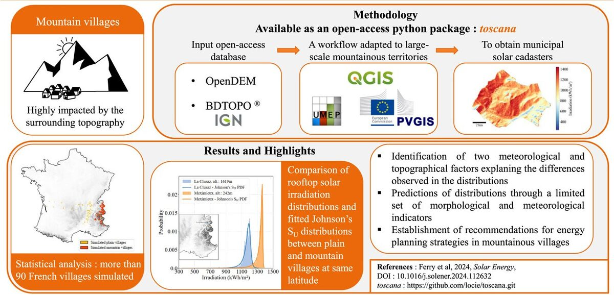
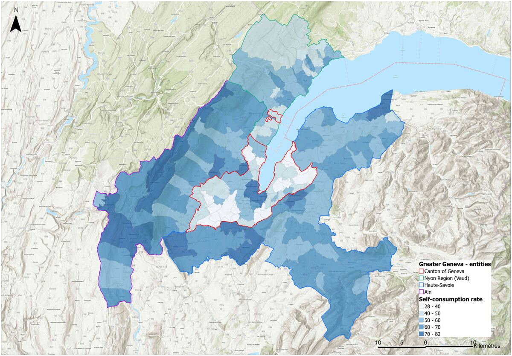

Ongoing 2025–present
DOLMEN, ANR JCJC
An ANR young-researcher project I lead. Surveying and analysing the photovoltaic capacity already installed at national scale.
ANR, jeune Chercheuse Jeune Chercheur (JCJC)
My work links thermal and fluid sciences to the deployment of solar energy across real territories. Three axes structure the whole.
01
How much sun reaches a façade, a rooftop, a valley. And how to describe the variation without simulating every hour of every year.

In an open field, the solar resource fits into a single time series. In a city, the resource becomes a four-dimensional field. Every façade and every roof sees a different sky. Neighbouring buildings cast shade at different hours. The whole pattern turns with the seasons. In mountains, terrain adds cast shadows of its own.
This axis measures the variation and looks for compact descriptions. Principal component analysis, proper orthogonal decomposition and higher-order multilinear decomposition separate the spatial and temporal structures of the urban radiation field. A small number of modes then replaces a full simulation.
The workflows run on open tools and open data. Digital elevation models, BD TOPO, QGIS with the UMEP plugin, typical meteorological years from PVGIS. We compare façade irradiation tools against each other and we validate them. An unchecked model gives you nothing to plan with.
Ongoing 2025–present
An ANR young-researcher project I lead. Surveying and analysing the photovoltaic capacity already installed at national scale.
ANR, jeune Chercheuse Jeune Chercheur (JCJC)
02
A module in a dense, warm city does not produce like the same module on a test bench. The gap matters if you size an installation.
Photovoltaic output falls as cell temperature rises. Cities run warmer than their surroundings. Mounting configurations trap heat to different degrees. The climate itself is changing. Each factor shifts the yield an installation delivers.
We map urban heat islands at territorial scale using unsupervised learning. We then couple the thermal environment to electrical and thermal models of photovoltaic systems. Geneva, the Greater Sydney area, and French cities under climate change scenarios.
Upstream sits the physics of the envelope. A ventilated solar façade lets heated air rise in the channel behind. The flow rate decides whether the envelope cools the modules or traps heat against them. Experiments and direct numerical simulation gave a clear result. Thermal stratification of the surrounding air changes the mass flow rate substantially. Models need to represent the stratification, not reduce the air to one outdoor temperature.
Related work covers the boundary conditions of floating photovoltaics, optimal tilt angles for bifacial plants across Europe, and the origin of uncertainty in a predicted hourly yield.
Ongoing 2023–present
A collective CNRS report. Answering the recurring questions of the public debate on photovoltaics, with sources.
CNRS
03
A municipality cannot equip every roof at once. You have to choose. The choice involves far more than sunlight.

Massive photovoltaic deployment rarely runs short of resource. Sunlight is abundant and the available surface suffices. The problem sits in the decision. Which roofs, in what order, on what criteria, decided by whom.
The criteria share no common unit. Irradiation, usable area, self-consumption potential, roof complexity, payback period, heritage constraints, grid capacity, social acceptance. This axis applies multicriteria decision aiding to the problem. We elicit what stakeholders value. We aggregate the criteria in a form they inspect and contest. We sort large building stocks into ordered categories, instead of producing one opaque score. The method builds on ELECTRE TRI. We applied the method to Greater Geneva, some 265,000 buildings, and then to mountainous French territories.
Planning what comes next means knowing what stands today. Convolutional neural networks applied to aerial imagery detect existing photovoltaic installations building by building across French territory. We validate the results against distribution grid operator records. The datasets, the code and a public dissemination site are open. A cadastre serves no purpose if the people who decide never see the results.
Ongoing 2025–present
An ANR young-researcher project I lead. Surveying and analysing the photovoltaic capacity already installed at national scale.
ANR, jeune Chercheuse Jeune Chercheur (JCJC)
Completed 2020–2024
An international collaboration across ten countries. Planning neighbourhoods so solar access survives the next round of construction.
IEA Solar Heating and Cooling Programme
Completed 2019–2022
A cross-border Interreg project. Building, validating and putting to work a solar cadastre covering 265,000 buildings.
Interreg France–Suisse
Ongoing 2023–present
A collective CNRS report. Answering the recurring questions of the public debate on photovoltaics, with sources.
CNRS